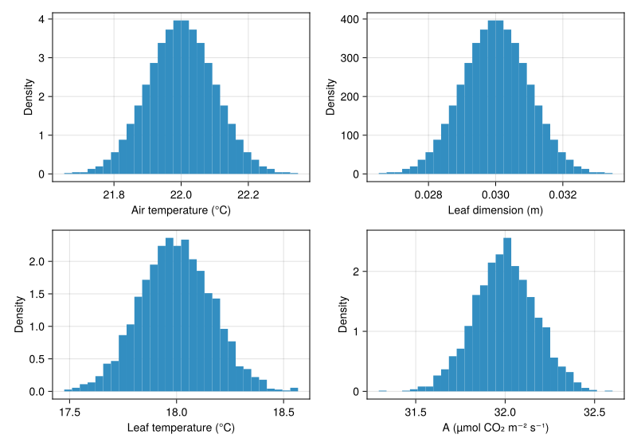
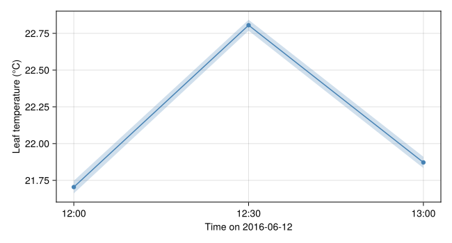

Uncertainty propagation
How much uncertainty in leaf temperature or photosynthesis comes from uncertain weather and leaf inputs? We can explore this with the same coupled model as in the first simulation, replacing individual numbers with distributions.
MonteCarloMeasurements.jl represents each uncertain value by a collection of samples called particles. Arithmetic propagates those samples through the model, giving an output distribution instead of a single prediction. This page shows how to specify the inputs, inspect the resulting uncertainty, and plot it.
Describe uncertain inputs
The notation 22.0 ± 0.1 creates samples from a normal distribution with mean 22.0 and standard deviation 0.1. The units are unchanged: for air temperature, these values are in °C. The default is 2,000 particles.
using PlantBiophysics, PlantSimEngine, PlantMeteo, Dates, DataFrames
using MonteCarloMeasurements, CairoMakie, Random
using MonteCarloMeasurements: (..)
Random.seed!(1234)
unsafe_comparisons(true)
meteo = Atmosphere(
T=22.0 ± 0.1,
Wind=0.8333 ± 0.1,
P=101.325 ± 1.0,
Rh=0.4490995 ± 0.02,
Cₐ=400.0 ± 1.0,
duration=Hour(1),
)
scene = leaf_scene(
Monteith(),
Fvcb(),
Medlyn(0.03, 12.0);
status=Status(
Ra_SW_f=13.747 ± 1.0,
sky_fraction=1.0,
aPPFD=1500.0 ± 1.0,
d=0.03 ± 0.001,
),
type_promotion=Dict(Float64 => Particles{Float64,2000}),
environment=meteo,
)[ Info: Unsafe comparisons using the function `pmean` has been enabled globally. Use `@unsafe` to enable in a local expression only or `unsafe_comparisons(false)` to turn off unsafe comparisonsThe model parameters remain fixed here; weather and leaf inputs are uncertain. type_promotion lets the leaf's calculated values also hold particles. It changes the numeric type of status values, not their units or model parameters.
The energy-balance calculation compares values to choose branches and check convergence. unsafe_comparisons(true) makes these comparisons use particle means. This is an approximation: different samples may need different branches or iteration counts. For large uncertainties or values near a threshold, compare with separate simulations of individual samples. The setting applies globally; we turn it off at the end of this page.
Run and inspect the distributions
The simulation runs in the usual way. pmean and pstd extract the mean and standard deviation of each calculated distribution:
simulation = run!(scene; outputs=:all)
leaf = only(model_objects(scene; scale=:Leaf))
variables = [:Rn, :H, :λE, :Tₗ, :A, :Gₛ]
summary = DataFrame(
variable=variables,
mean=[pmean(getproperty(leaf.status, variable)) for variable in variables],
std=[pstd(getproperty(leaf.status, variable)) for variable in variables],
unit=["W m⁻²", "W m⁻²", "W m⁻²", "°C", "µmol CO₂ m⁻² s⁻¹", "mol CO₂ m⁻² s⁻¹"],
)| Row | variable | mean | std | unit |
|---|---|---|---|---|
| Symbol | Float64 | Float64 | String | |
| 1 | Rn | 26.3098 | 1.03747 | W m⁻² |
| 2 | H | -198.214 | 11.2085 | W m⁻² |
| 3 | λE | 224.524 | 11.3871 | W m⁻² |
| 4 | Tₗ | 17.9969 | 0.168047 | °C |
| 5 | A | 31.9974 | 0.171329 | µmol CO₂ m⁻² s⁻¹ |
| 6 | Gₛ | 1.34642 | 0.0323781 | mol CO₂ m⁻² s⁻¹ |
The fluxes are per unit leaf area. These standard deviations describe the spread caused by the supplied input distributions; they do not include all possible model errors.
Vector(value) retrieves the individual samples for plotting. The first two panels below show input distributions; the others show the calculated leaf temperature and assimilation distributions.
figure = Figure(size=(800, 560))
for (position, value, label) in (
((1, 1), meteo.T, "Air temperature (°C)"),
((1, 2), leaf.status.d, "Leaf dimension (m)"),
((2, 1), leaf.status.Tₗ, "Leaf temperature (°C)"),
((2, 2), leaf.status.A, "A (µmol CO₂ m⁻² s⁻¹)"),
)
axis = Axis(figure[position...]; xlabel=label, ylabel="Density")
hist!(axis, Vector(value); bins=30, normalization=:pdf)
end
figure
Use a bounded distribution
A normal distribution is not always appropriate. For example, leaf dimensions must be positive, and relative humidity must remain between 0 and 1. a .. b creates a uniform distribution between a and b:
bounded_meteo = Atmosphere(
T=15.0 .. 18.0,
Wind=0.8333 ± 0.1,
P=101.325 ± 1.0,
Rh=0.4490995 ± 0.02,
Cₐ=400.0 ± 1.0,
duration=Hour(1),
)
bounded_scene = leaf_scene(
Monteith(), Fvcb(), Medlyn(0.03, 12.0);
status=Status(
Ra_SW_f=13.747 ± 1.0,
sky_fraction=1.0,
aPPFD=1500.0 ± 1.0,
d=0.01 .. 0.03,
),
type_promotion=Dict(Float64 => Particles{Float64,2000}),
environment=bounded_meteo,
)
run!(bounded_scene)
bounded_leaf = only(model_objects(bounded_scene; scale=:Leaf))
(Tₗ=bounded_leaf.status.Tₗ, A=bounded_leaf.status.A)(Tₗ = 13.4 ± 0.77, A = 28.9 ± 0.63)The choice of distribution expresses what you know about an input. Use bounded distributions when physical limits matter. Reuse an uncertain quantity when it represents the same measurement; drawing it again would create a new set of samples and change the assumed relationship between inputs.
Plot uncertainty over several timesteps
Uncertainty can also propagate through a weather series. Here we import the three half-hour records from PlantMeteo's bundled weather file, preserving their dates and times, and add uncertain absorbed light. The same leaf inputs are retained across all three steps.
weather = read_weather(
joinpath(pkgdir(PlantMeteo), "test", "data", "meteo.csv"),
:temperature => :T,
:relativeHumidity => (values -> values ./ 100) => :Rh,
:wind => :Wind,
:atmosphereCO2_ppm => :Cₐ,
date_format=DateFormat("yyyy/mm/dd"),
)
series_scene = leaf_scene(
Monteith(), Fvcb(), Medlyn(0.03, 12.0);
status=Status(
Ra_SW_f=13.747 ± 2.0,
sky_fraction=0.6 .. 1.0,
aPPFD=1500.0 ± 100.0,
d=0.03,
),
type_promotion=Dict(Float64 => Particles{Float64,2000}),
environment=weather,
)
series_simulation = run!(series_scene; steps=length(weather), outputs=:all)
rows = DataFrame(collect_outputs(series_simulation; sink=nothing))
temperatures = subset(
rows,
:application_id => ByRow(==(:energy_balance)),
:variable => ByRow(==(:Tₗ)),
)
sort!(temperatures, :timestep)
timestamps = DateTime.(temperatures.datetime)
@assert timestamps == [weather[i].date for i in temperatures.timestep]
elapsed_minutes = Dates.value.(timestamps .- first(timestamps)) ./ 60_000
figure = Figure(size=(650, 350))
axis = Axis(figure[1, 1];
xlabel="Time on $(Date(first(timestamps)))", ylabel="Leaf temperature (°C)",
xticks=(elapsed_minutes, Dates.format.(timestamps, "HH:MM")),
)
band!(axis, elapsed_minutes,
[pquantile(value, 0.025) for value in temperatures.value],
[pquantile(value, 0.975) for value in temperatures.value];
color=(:steelblue, 0.25),
)
scatterlines!(axis, elapsed_minutes, pmean.(temperatures.value); color=:steelblue)
figure
The line shows the mean, and the band spans the 2.5th to 97.5th percentiles of the simulated distribution. The saved datetime values match the weather records at each simulation timestep. The band describes uncertainty under these inputs and assumptions, rather than a confidence interval established from observations.
More particles improve the sampling resolution but increase computation time. Check whether the statistics you need change materially when you increase the sample count. For other distributions and correlated inputs, see the MonteCarloMeasurements documentation linked above.
Restore the default comparison behaviour after finishing:
unsafe_comparisons(false)